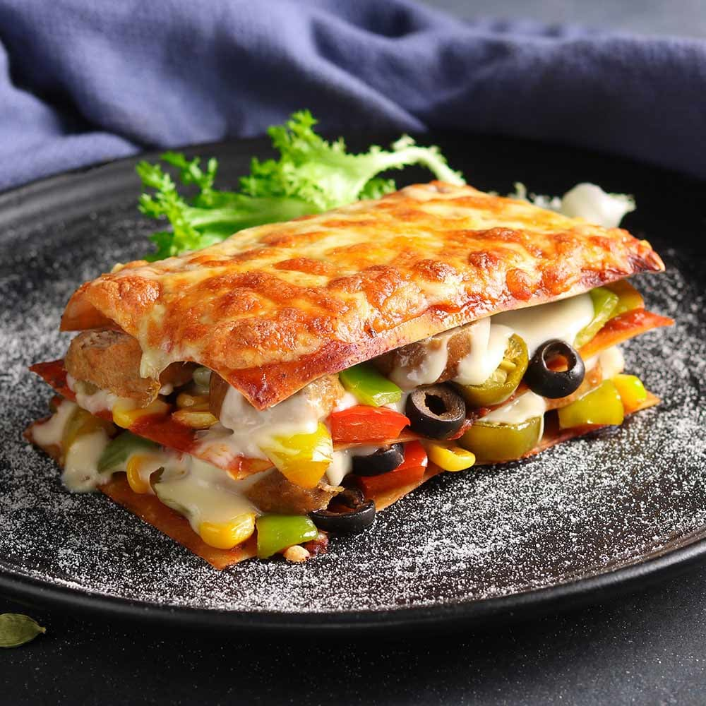

Lasagna

Lasagna is a wide, flat sheet of pasta. Lasagna can refer to either the type of noodle or to the typical lasagna dish which is a dish made with several layers of lasagna sheets with sauce and other ingredients, such as meats and cheese, in between the lasagna noodles.
Originally, the word lasagna was used to describe a pot in which food was being cooked rather than the pasta itself. Lasagna recipes have been around for ages, dating back to as early as the thirteenth century. Today, lasagnas come in all kinds of varieties from veggies and cream sauces to traditional sauce and cheese lasagnas as well as meat lasagnas.
Ingredients:
- Pasta Sauce
- 1 Package of no boil lasagna noodles
- 1 Quart RIcotta Cheese
- 2 Cups shredded mozzarella cheese
- Mixed vegetables
- salt and pepper
- basil for garnish
Steps:
- Preheat oven to 400°F
- In a 9 x 13 lasagna pan, spread a layer of pasta sauce
- Add noodles, ricotta cheese, and vegetables. Salt and pepper the vegetables. Top with more sauce
- Keep building layers in this order until there is approximately an inch of space remaining
- The last 3 layers should be noodles and sauce topped with shredded mozzarella. Tightly cover with aluminum foil and bake for 45 minutes, depending on the cooking time for the noodles
- Remove foil. Top with parmesan and bake uncovered for about 5 minutes until the cheese on the top melts
- Garnish with chopped basil